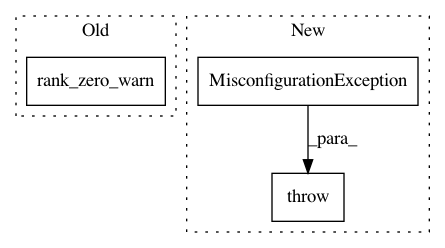

f6dc354349094e3692fe25fea5ccb14439c318ff,pytorch_lightning/callbacks/early_stopping.py,EarlyStopping,__init_monitor_mode,#EarlyStopping#,98
Before Change
// TODO: Update with MisconfigurationException when auto mode is removed in v1.3
if self.mode not in self.mode_dict and self.mode != "auto":
if self.verbose > 0:
rank_zero_warn(
f"EarlyStopping mode={self.mode} is unknown, fallback to auto mode.",
RuntimeWarning,
)
self.mode = "auto"
if self.mode == "auto":
rank_zero_warn(
After Change
def __init_monitor_mode(self):
if self.mode not in self.mode_dict and self.mode != "auto":
raise MisconfigurationException(
f"`mode` can be auto, {", ".join(self.mode_dict.keys())}, got {self.mode}"
)
// TODO: Update with MisconfigurationException when auto mode is removed in v1.3
if self.mode == "auto":
rank_zero_warn(
In pattern: SUPERPATTERN
Frequency: 3
Non-data size: 3
Instances
Project Name: williamFalcon/pytorch-lightning
Commit Name: f6dc354349094e3692fe25fea5ccb14439c318ff
Time: 2021-01-11
Author: alanhdu@gmail.com
File Name: pytorch_lightning/callbacks/early_stopping.py
Class Name: EarlyStopping
Method Name: __init_monitor_mode
Project Name: williamFalcon/pytorch-lightning
Commit Name: f6dc354349094e3692fe25fea5ccb14439c318ff
Time: 2021-01-11
Author: alanhdu@gmail.com
File Name: pytorch_lightning/callbacks/model_checkpoint.py
Class Name: ModelCheckpoint
Method Name: __init_monitor_mode
Project Name: williamFalcon/pytorch-lightning
Commit Name: 936f42aa1c72b9bb1f7f4108ada0a77cdf256220
Time: 2021-02-16
Author: Borda@users.noreply.github.com
File Name: pytorch_lightning/accelerators/accelerator_connector.py
Class Name: BackendConnector
Method Name: select_precision_plugin